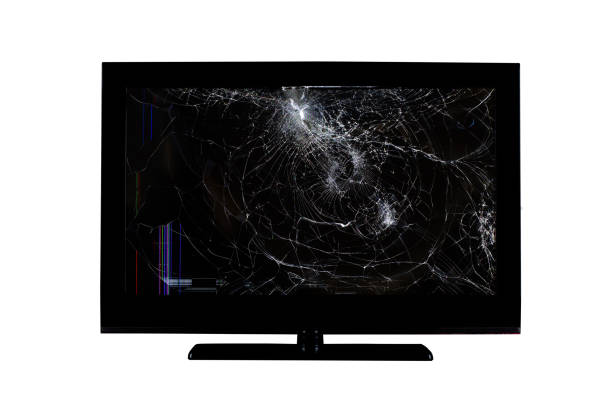

We buy damaged electronics
We purchase broken/repairable laptops, phones, desktops, TVs and printers.

Phones
All brands.Cracked screens, battery issues, water damage.
Laptops
Dead power, broken screens, boot faults.

TVs & Monitors
Panel damage, backlight faults and power issues.
Printers & Peripherals
Mechanic faults, jammed units, power issues.
What We Do With Broken Devices
At D-Tec, we don’t just buy broken electronics.We give them a second life. Here’s how we make use of the devices you sell to us:
- Salvage Spare Parts: We recover working components like screens, RAM, hard drives and chargers for reuse in future repairs.
- Refurbish & Resell: Devices with minor issues are repaired, tested, and resold as affordable second-hand options.
- Creative Repurposing: We convert old parts into useful items, such as turning screens into monitors or cases into project boxes.
- Training & Practice: Broken boards and devices are used for technical training and advanced repair practice.
- Eco-Friendly Recycling: Non-repairable parts are responsibly recycled through certified e-waste channels.
- Parts Exchange: We use components from broken devices to fix other customers’ electronics, lowering costs for everyone.
How to sell to us
- Email dwangari96@gmail.com
- We reply with an initial offer or ask for more details.
- Arrange pickup or dropoff to get paid on inspection.